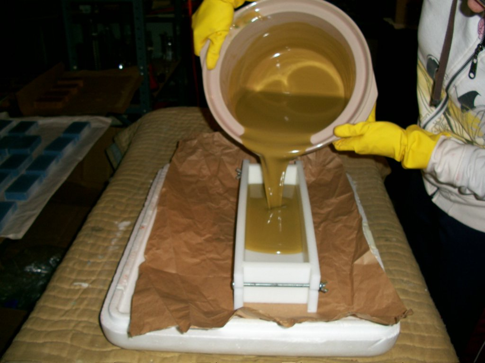
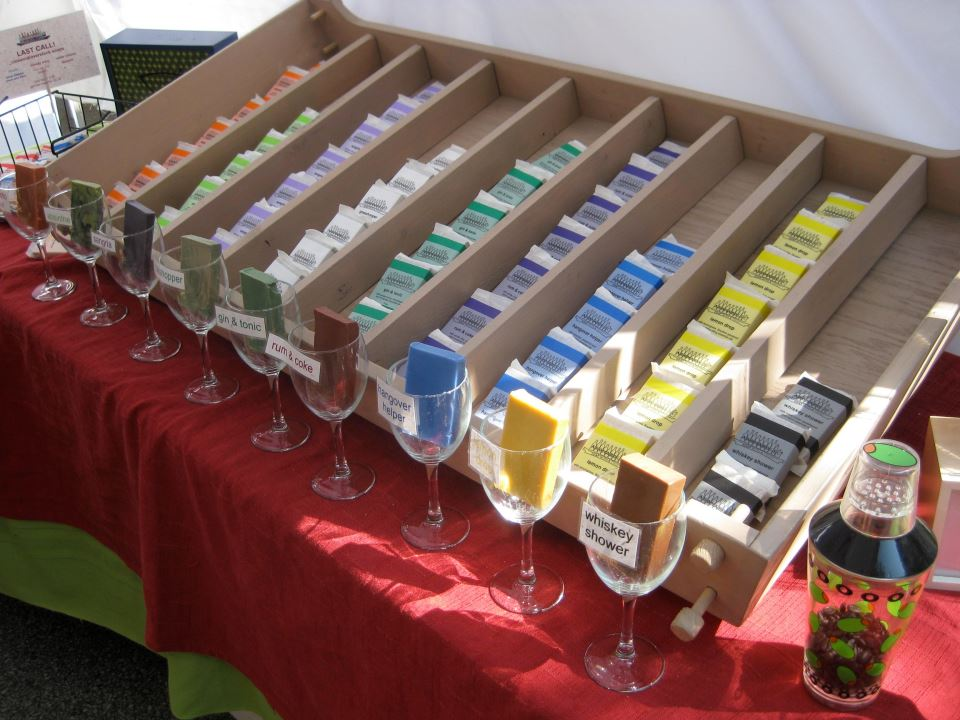

About Us
Perhaps you’re wondering where the unconventional idea for beer and liquor scented soaps originated.
In the beginning...
It all started innocently enough back in 2005, when I first started experimenting with essential oils in making homemade cleaning products. My fascination with these fragrant plant extracts and the myriad benefits of essential oils continues to this day; though at the time I just wanted an inexpensive and pleasant-smelling alternative to chemical-laden cleaners. I went a little overboard purchasing oils in bulk – first sign of an aromaholic? – and, in looking for something else to do with them, decided to try my hand at cold-process soapmaking.
I turned out that first batch of craft soap in 2006 – then it was the typical soap business trajectory of making lots of soap, giving friends and family the soap, who in turn encourage you to sell it, and so on.
Aromethyst Essential Oil Soaps, my first operation, began in 2007 and featured cold-process soaps and body products made with high-quality vegetable-based ingredients. However, also like many handmade soap companies, I eventually realized that, well, there’s a lot of handmade soap out there, and that all looks and sounds alike. My soap needed…a twist.

Aromaholic Body Care Product Line: An idea is born
One evening in 2010, I was having drinks with my girlfriends – specifically, gin and tonics. I had just gotten some awesome Bosnian juniperberry essential oil, and had lime and lemongrass essential oils coming out the wazoo. What to do with them? Suddenly it occurred to me that I could make a kick-ass Gin and Tonic soap with those exact ingredients.
Thus, the idea for soaps scented like liquor was born – after all, mixers and liquors and wines come from plants, just like essential oils. Rum and Coke soap came next, then Mojito, White Russian, Lemon Drop, Jagerbomb, Bloody Mary, and Whiskey Shower, along with a collection of craft beer soaps scented like their respective brews, such as Hefeweizen and Vanilla Porter.

A line of -flavored lip balms came shortly after in 2011. We started out with classics like Mojito and Lemon Drop, and have since expanded to include drinks ranging from Amaretto Sour to Cement Mixer and a matching lip balm for the Gin and Tonic that started it all.
Our future
As long as new drink innovations keep coming out in the cocktail world, Aromaholic will keep experimenting. We'll also continue to make the classics and favorites: Whiskey Shower soap, Rum and Coke soap, White Russian lip balm, Mojito lip balm, and Gin and Tonic Soap – with the same commitment to quality ingredients and intoxicating aromas I’ve had since the beginning.
Make sure to check out our complete product line on our Etsy shop.